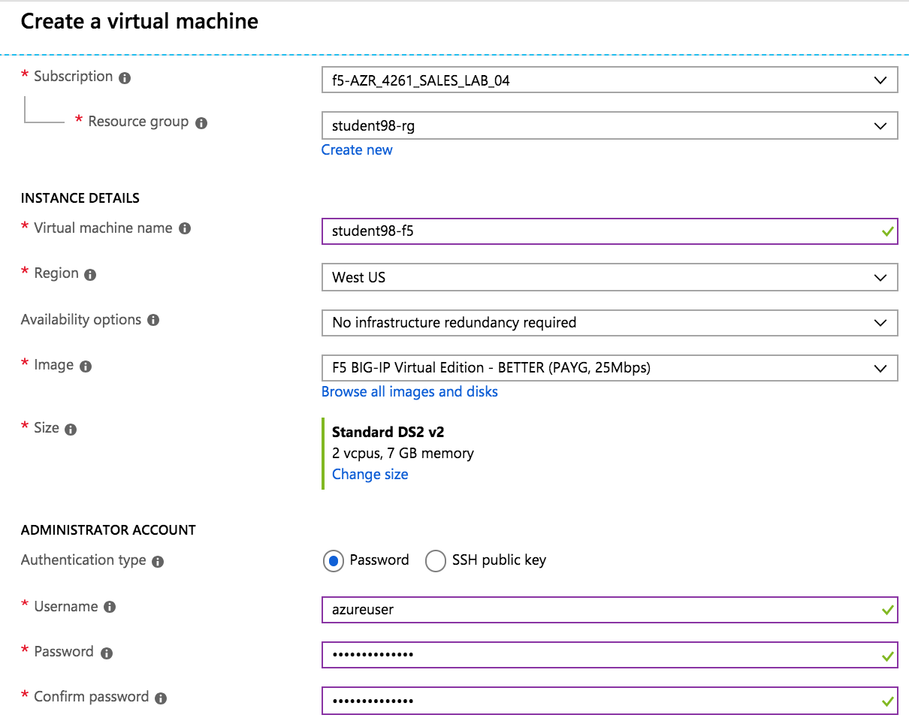
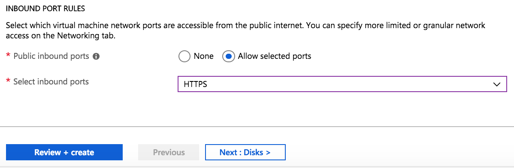
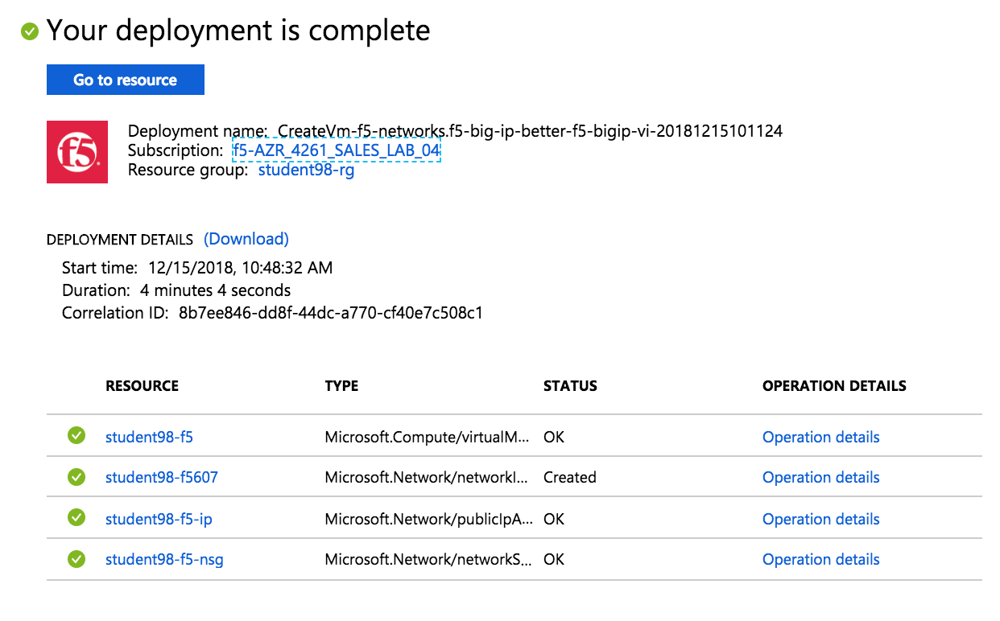
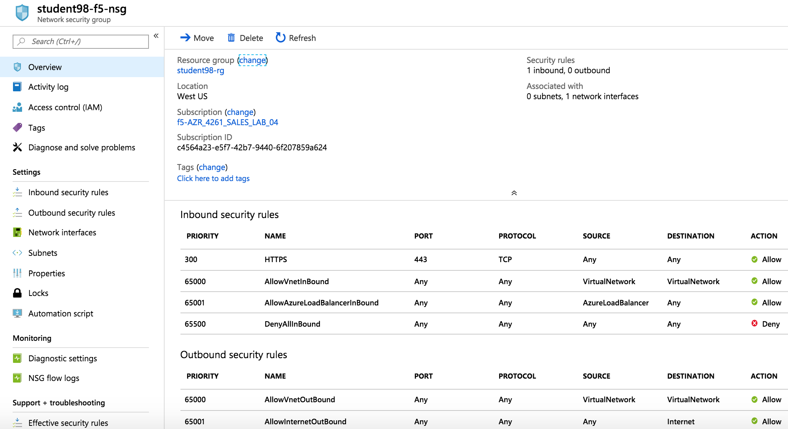
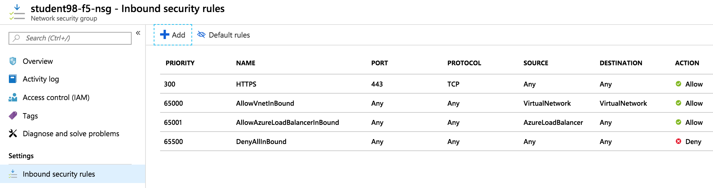
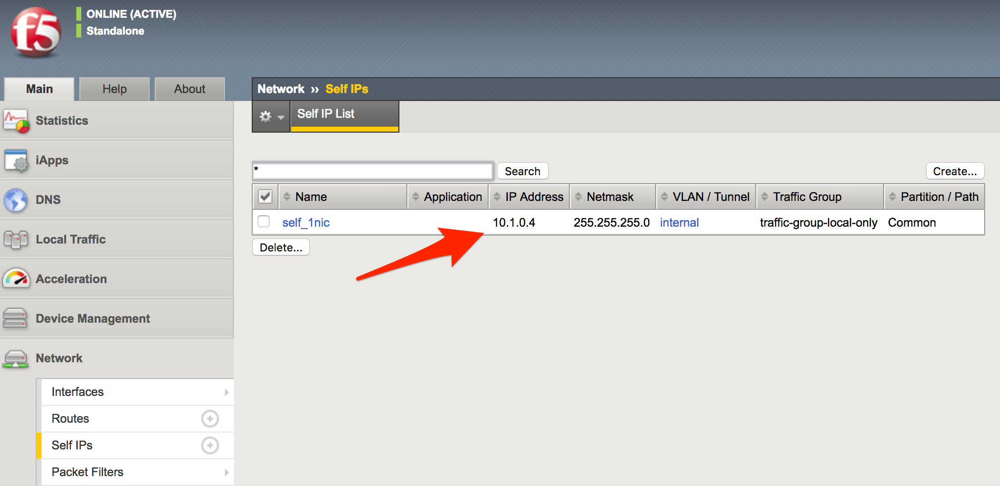
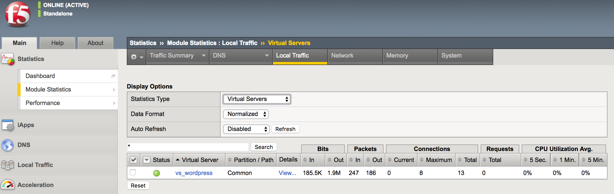

Community Training Classes & Labs > F5 Lab Days - Azure Index
2.1.6. Task – Deploy a new F5 BIG-IP VE in Azure¶
Log into the portal – https://portal.azure.com using the student## account assigned.
Click the green + sign at the top left corner of the screen
Search the marketplace by typing ‘F5 Better’ in the search field and hit Enter. Take your time to view the different F5 products available.
Click F5 BIG-IP ADC BETTER – BYOL
Note
An appropriate license is delivered by your lab proctor. The proctor will explain why you use BYOL in this lab.
At the bottom of the next page, selected Resource Manager as the deployment model
Click Create
You will now start the deployment process. Use the information provided in Table 1.1 below to complete the “Create virtual machine” Basics page.
Table 1.1
Key Value BIG-IP Image F5 BIG-IP ADC BETTER – BYOL Deployment Model Resource Manager Name f5bigipuser<student number>bigip1 VM disk type SSD User name f5bigipuser<student number> Authentication Type SSH public key SSH public key From Lab 1, Task 1 Subscription <User Unique> Resource group Create new Resource group name f5bigipuser<student number>usergroup Location <Closest Azure DC> Example:
Once done, click OK
You now need to select the Virtual Machine disk type and image size. Using the information in Table 1.2 complete the “Size” page.
Note
For a complete list of compatible Azure instance sizes, refer to the “BIG-IP Virtual Edition and Microsoft Azure: Setup” guide.
Table 1.2
Key Value Disk Type HDD Size D2_V2 Standard Search D2 from “Choose a size”
Select D2_V2 Standard
Click Select
In the “Settings” page, provide the remaining information required for the BIG-IP deployment and associated resources. Using the information in Table 1.3 to complete the “Settings” page.
Table 1.3
Key Value Storage Type HDD Use managed disks No Public Inbound ports HTTPS Under Settings, change “Disk type” to HDD and “Use managed disk” to No
Look around at the various configurable items but leave them unchanged.
Once done, click OK
Review the “Summary” page and the purchase you are about to make
Note
In the screenshot below:
- Notice “Validation passed”
- Notice the F5 license BYOL is not charged
- Notice the VM where the BIG-IP VE will reside is charged
Supply your email and phone number for validation
Click Create
{kind=link}
{kind=link}
{kind=link}
{kind=link}
{kind=link}
{kind=link}
{kind=link}
2.1.7. Task – Allow management and HTTP access to the BIG-IP¶
In this task you will permit management access and HTTPS access to the BIG-IP by modifying the Network Security Group “Inbound” network access rule set.
Go to Resource groups
Expand your Resource group and select the Network security group
Review the existing ruleset. Notice that you only have an inbound rule allowing SSH.
Now you will add rules to allow HTTPS for F5 BIG-IP management and data plane by clicking on “Inbound security rules” (to the left of the screen below).
Click Inbound security rules
Click + Add
Using the information provided in Table 1.4, add a rule to allow F5 BIG-IP management traffic.
Table 1.4
Key Value Source Any Source Port * Destination Any Destination Port 8443 Protocol Any Action Allow Priority 100 Name f5-allow-mgmt Click OK
Repeat the previous step to add another rule using the information provided in Table 1.5, this time allowing external HTTPS traffic via the F5 BIG-IP.
Table 1.5
Key Value Source Any Source Port * Destination Any Destination Port 443 Protocol Any Action Allow Priority 101 Name f5-allow-external-https When complete, verify the end results look as follows:
Connect to the F5 GUI by going to https://<F5-BIG-IP-public-IP>:8443
Accept the SSL certificate warning
Log into the BIG-IP using the credentials configured in the previous steps
Click Log in
Go to Resource groups and click on your resource group
Select your WordPress “Public IP address”
Note
Remember the WordPress public IP address. This will be used in subsequent steps.
Go ahead and test access to the WordPress public IP with SSH and HTTPS.
Verify that https://<WordPress-Public-IP> displays the Wordpress blog
- You may have to accept the security warning
You now need to modify the Network security group to remove direct inbound access to the WordPress application. Let’s go back to the Microsoft Azure portal.
Go to Resource groups and click on your resource group
Select your WordPress Network security group
Remove the HTTP and HTTPS inbound rules while leaving only SSH access
Note
You will only allow web access to the WordPress blog via the F5 BIG-IP.

Click on the … link at the far right side of the rule to be deleted

Click Delete
Confirm the delete action when prompted by clicking Yes
Now it’s time to confirm web access has been restricted to WordPress. Open a private browser window (not a normal window…choose private)
Verify that https://<WordPress-Public-IP> and http://<WordPress-Public-IP> do NOT display the WordPress blog
{kind=link}
{kind=link}
{kind=link}
{kind=link}
{kind=link}
{kind=link}
{kind=link}
{kind=link}
{kind=link}
{kind=link}
{kind=link}
{kind=link}
{kind=link}
2.1.8. Task – Allow Internet access to WordPress through the BIG-IP¶
In this task you will configure the BIG-IP with a Virtual Server and Pool to allow inbound Internet access to the WordPress application. First we need to identify the private IP address for the WordPress instance. Let’s go back to the Microsoft Azure Portal.
Select your WordPress Network Interface
Note
Remember WordPress private IP address. This will be used in subsequent steps.
This completes work in the Microsoft Azure Portal. You will now configure the F5 BIG-IP.
Connect to the BIG-IP using https://<F5-public-IP>:8443
From the BIG-IP GUI, go to Local traffic -> Pools -> Pool List and click on the + sign. Configure the pool using the information provided in Table 1.8 below leaving all other fields set to defaults.
Table 1.8
Key Value Name wordpress_pool Health Montitor HTTPS Node Name wordpress Address <your WordPress private IP address> Service Port 443 Click Finished. When configured correctly, the pool status will be green.
You now need to configure the Virtual server. To do this, you first need to find the private IP of your F5 BIG-IP.
From the BIG-IP GUI, go to Network -> Self IPs and note the IP Address
Create a virtual server by going to Local Traffic -> Virtual Servers -> Virtual Server List and click on the + sign. Configure the Virtual Server using the information provided in Table 1.9 below leaving all other fields set to defaults.
Table 1.9
Key Value Name vs_wordpress Destination Address <Self IP address of the BIG-IP> Service Port 443 SSL Profile (Client) clientssl SSL Profile (Server) serverssl Source Address Translation Auto Map Default Pool wordpress_pool Click Finish
You have now completed the BIG-IP configuration for the WordPress application. To verify proper functionality, let’s browse the site and verify F5 statistics.
Open a browser to to https://<F5-public-VIP-IP> and ensure it displays your WordPress blog.
Note
As part of this task, you will see a certificate warning. You can ignore this as in this lab you did not generate the server certificates. In real life, you would ensure you have installed valid certificates.
Now check the statistics of your virtual server to verify traffic flow, by navigating to Statistics -> Module Statistics -> Local Traffic
Under Statistics Type, select Virtual Servers

{kind=link}
{kind=link}
{kind=link}
{kind=link}
{kind=link}
{kind=link}
{kind=link}
{kind=link}
{kind=link}